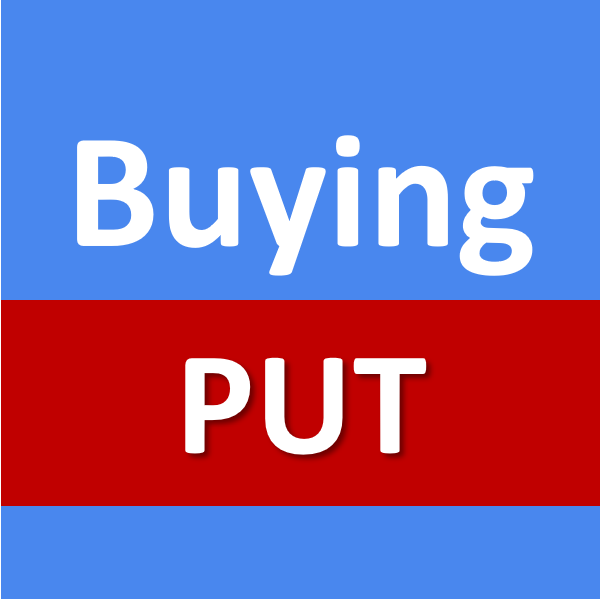

Choose a period; the candles are for 15 mins and includes data for nifty and india
vixThis will run the program for the selected period. And it will consider all the
flags.
By default if a trade has already profited, it will skip further trade for the day. Similarlily it will stop
trade if 2 trades are in loss.
The target and stoploss points are calculated based on the VIXThis will run all the test patterns one after another for the selected period,
throughout the day, without stopping if a trade has
profited or if the
overall trades for day is greater than 2. From day being to day end it will consider as the window
The below lets you test individual patterns, without stopping for the day regarless of the trade limit has met
or not
Bear pattern seen after a significant gap down of >=90 points and the current
candle
is red and at least has a diff of 10 pointsThis pattern will enter a PUT option as it has broken the days first supportThis pattern will enter a CALL option as it has broken the days first resistance
which is days openingIf 3 Candles are GREEN & the difference b/w the latest candle close and t-2 candle
open is greater than 0 & the day does not have a huge gap up opening and it was b/w 0 and 80 & MOST
IMPORTANT the candle is currently below the days open.If 3 Candles are red candles are formed and the difference between current candle
close and the first of three candle open is greater than zeroIf the day opens flat or with a gap up and the first 3 candles are red and there is
enough gap between the last red candle close & previous close then we enter a PUT optionThis pattern enters a PUT option; if the day opens with a negative bias and then
there is a bull run and the bull run stops with the current canlde being red. The current candle which is
red and previous candle which is green will be close to previous close which in this case acts as
resistance. This pattern enters a CALL option; if the day opens with a positive bias and then
there is a bear run and the bear run stops with the current canlde being green. The current candle which is
green and previous candle which is red will be close to previous close which in this case acts as
support. This pattern enters a PUT option; if the day opened with gap up and the previous
candle close is the days high, and if the current candle open is around the same spot and is red; the
probability the market will go reverse provided there is some distance to trade b/w current point and the
open
